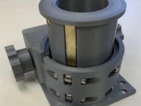
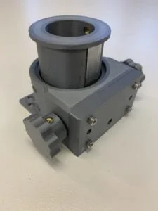
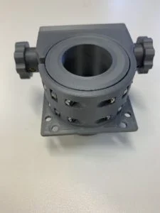
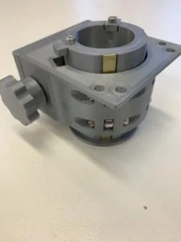
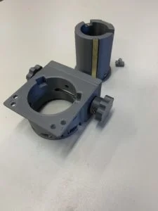
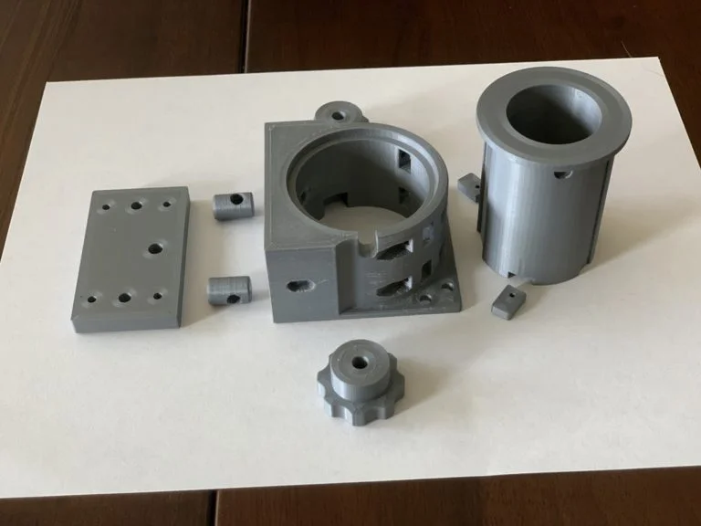
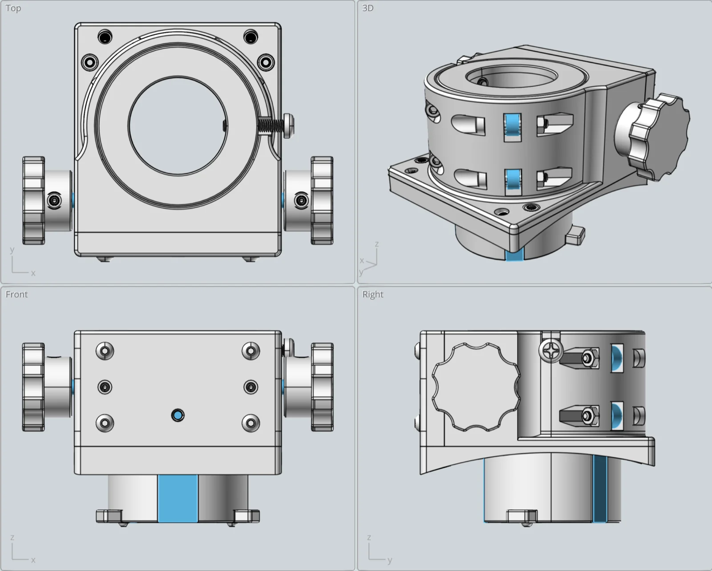
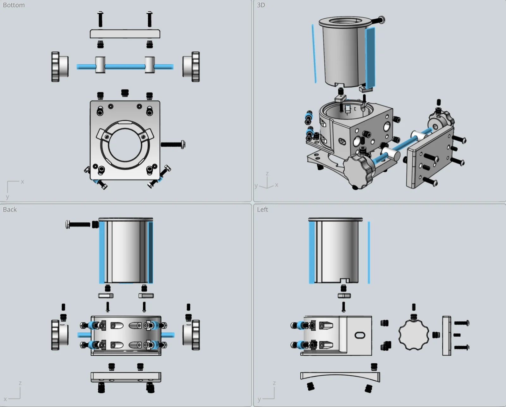

Crayford Focuser 1¼″
Includes the STEP CAD file, 7 STL files for the 3D-printed parts, and the instructions PDF.
{kind=link}

A 3D-printed Crayford-style telescope focuser sized for 1¼″ eyepieces — smooth, backlash-free drawtube travel on a 10″ Newtonian tube. Free CAD files available.
I wanted to use a 1 1/4″ focuser for an 8″ Newtonian telescope I was making. But most commercial Crayford focusers are designed for 2″ eyepieces, which are a bit large for an 8″ telescope. So I decided to make use of my 3D printer and create my own 1 1/4″ Crayford focuser. My design fits a 10″ diameter tube, but one could easily modify the design if a flat base is needed.
My focuser works just like any other Crayford focuser. Turn the knob and the drawtube smoothly, with no backlash, moves up or down until a stop is reached. The drawtube friction is adjusted using the two tensioning grub screws on the focuser back. Also on the back is an optional M4 threaded hole to add a brake if using heavier accessories. My heaviest eyepiece is a 24mm Televue Panoptic eyepiece, which works fine without the brake.
Here are a few of the key focuser design attributes (with a 2mm thick curved base added):
- Drawtube inside diameter: 1 1/4″
- Minimum racked-in height: 40mm
- Maximum racked-out height: 70mm
- Drawtube travel: 30mm
- Maximum drawtube extension below base: 23mm
- Weight: 200g
- 3D print material: PLA
- Curved base mounting holes: 48mm x 63mm
- Base dimensions: 68mm x 77mm
This design is also shared on Thingiverse.
Supplies
Materials & Hardware
- PLA filament (drawtube, base, curved base, pinion pressure rods, base back, knobs, drawtube stops)
- Drawtube bearing rail — 1mm x 6mm x 60mm brass, 2x
- Drawtube pinion rail — 1/16″ x 1/2″ x 60mm aluminum
- Pinion rod — 5mm dia x 96mm stainless
- Bearings — 8mm OD x 3mm ID x 4mm stainless, 4x
- M2, M3, and M4 screws, nuts, washers, and grub screws (see the instructions PDF for the full parts list with exact quantities)
- M2, M3, and M4 brass heat-set inserts
- M4 nylon screw (drawtube eyepiece capture screw)
Consumables
- JB Weld original epoxy (metal rails to drawtube)
- Sandpaper
Tools
- 3D printer (Prusa MK3S+ used for the example, PrusaSlicer)
- Hex and Phillips screwdrivers
- Drill bit (for minor hole enlarging/fitting)
Pulled from the instructions PDF’s parts list — see the downloadable PDF for the complete table with every quantity and note.
3D Printer Settings
The settings below worked for the example focuser — a novice-3D-printer-user disclaimer applies, so don’t hesitate to adjust for your own printer and capabilities.
- Printer: Prusa MK3S+ · Slicer: PrusaSlicer · Filament: Prusament PLA
- Nozzle temperature: 215°C · Bed temperature: 60°C
- Layer height: 0.20mm · Perimeters: 6
- Solid layers (top and bottom): 8 · Minimum shell thickness: 0.7mm
- Supports: none on the drawtube; everywhere on the base (in hindsight, only the two pinion pressure rod holes likely need support)
Printer tolerances vary — the inside hole diameters on the example printer came out about 0.2mm smaller than the CAD setting, so the models have holes sized 0.2mm larger than needed to compensate (e.g. a 3mm hole for an M3 screw is modeled at 3.2mm). Check your own printer’s tolerance before printing.
Build Steps
Drawtube
- 3D print the drawtube.
- Lightly sand the three drawtube rail recesses used for the pinion aluminum rail and two brass bearing rails.
- Cut the metal rails to length, check the fit, clean and rough up both sides with sandpaper, then glue the metal rails to the drawtube with epoxy. Clamp the rails to the drawtube for a strong glue joint — a small piece of scrap wood on top of each rail with rubber bands as clamps works well.
- Install the heat-set brass inserts for the eyepiece retainer screw and the two drawtube stops in the bottom end. Use M2 screws for the stops (the design was revised from an original M3).
Focuser Base
- 3D print the base. Consider selective support material (e.g. via PrusaSlicer) rather than supporting the entire base — only the two pinion pressure rod holes are likely to need it.
- Install the four heat-set inserts for the base back plate and the one insert for the optional brake, then the two pressure grub screw inserts (installed from the backside of the back plate for extra holding strength). Install the heat-set inserts into the two knobs as well.
- Install the four drawtube pressure bearings that fit against the drawtube brass rails, with flat washers as spacers between the bearings and the base.
- Do a quick fit check on the pinion shaft, which should turn freely — carefully enlarge the holes with a drill bit if needed.
- Fit the pinion pressure rods: clean out and lightly round the two holes in the base, then trial-fit and lightly sand the rods for a snug, no-slop fit.
- Insert the pinion rod and check for a close-tolerance, smooth-turning fit, including a push-pull check that the pressure rods move in and out correctly.
- Install the base back using four M3 screws, then add the two grub screws that push the pinion rod against the drawtube.
- Add the drawtube before tightening the pressure grub screws.
- Install the two knobs.
- Carefully tighten the pressure grub screws (very little pressure needed) until the drawtube moves smoothly and holds the eyepiece securely.
- Add the two drawtube stops and the drawtube M4 nylon screw that captures the eyepiece.
If mounting to a telescope tube with a curved interface (the example fits a 10.25″ OD tube), print and glue on the curved base first, then add heat-set inserts for the four mounting screws (installed from inside the tube) and the four alignment grub screws (installed and accessed from the focuser side).
Final Thoughts
The hardware parts are all easily located online — most were sourced from Amazon, and McMaster-Carr is a good alternative supplier. Use the exploded views and parts list in the downloadable PDF alongside a 3D model viewer or CAD program to help visualize the full design before ordering.
Image Gallery






